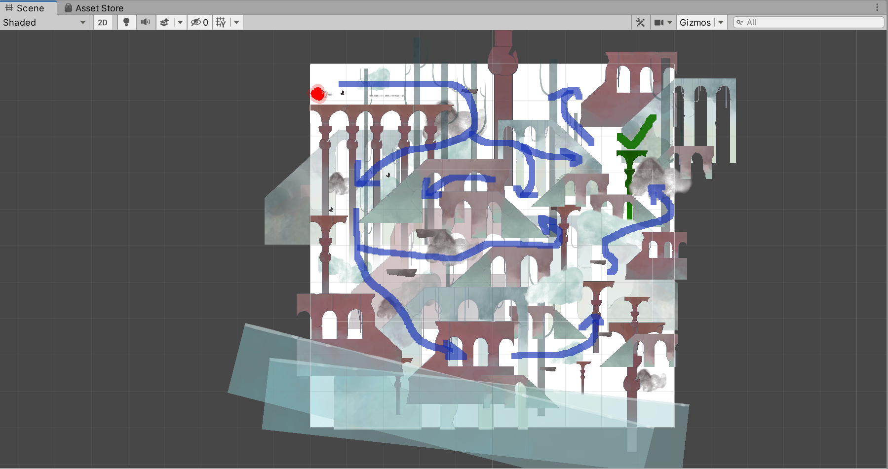

Beakon
Details
- Engine/Platforms: built in Unity for PC, available on Itch.io
- Team Size: 7
- Duration: 48 hours (Game Jam)
- Tools Used: Unity, C#, Git
- Role: Game Engineer, Level Designer
Overview
Beacon is a 2D platform-adventure game where you float around and restore color to the world. It was made during USC MEGA Game Jam 2021 under 48 hours. This game won Best Art among 16 final game submissions.
Inspired by GRIS, the game allows the player to restore a peaceful, paint-like world. The player will navigate through the world by controlling the character and “paint” the world back to color with the mouse.
My Role - Game Engineer & Level Designer
- Implemented 2D character controller including movement and flying
- Designed and implemented game level
- Implemented the entire game level using art pieces our artist created
- Implemented the 2D parallax effect
Level Design Showcase
I designed the entire level for Beakon’s one and only level. In this level, your goal is to explore and restore the world, and find and reach your final destination (colored green in the level). Being a simple game that doesn’t have many complex mechanics, having a well-laid-out level was important.

I started the level design, with the goal, materials, and constraints in mind. I arranged the different environmental pieces in the limited 2D space in a way that created verticalities and varieties. The goal was simple but the level was non-linear, it had many different directions the player can go (as seen in the image below, with possible directions annotated in blue). As you can see, the destination was not far from the player’s starting position, and the player could quickly reach the goal if they follow a certain path. But utilizing our game’s unique feature of restoring a world (the player has a limited view), the level was designed so that the player would likely go the long path, because they tend to follow the new visual stimulants (things such as the closest stairs, flying birds).
